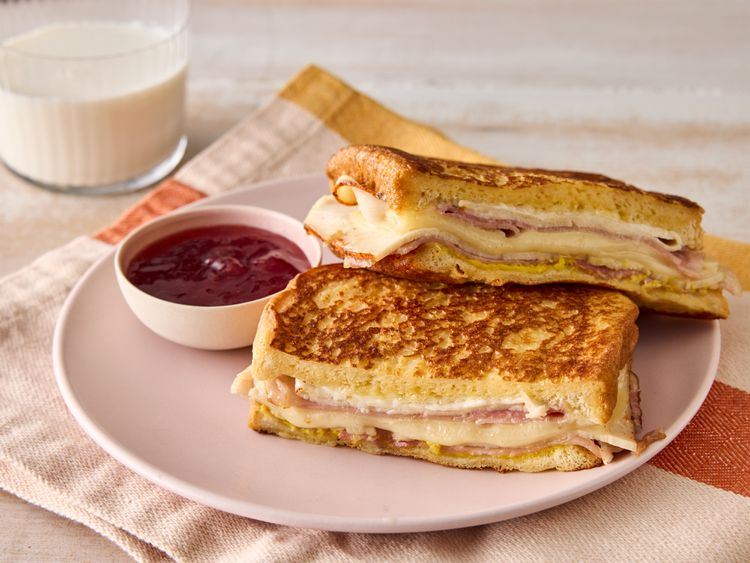
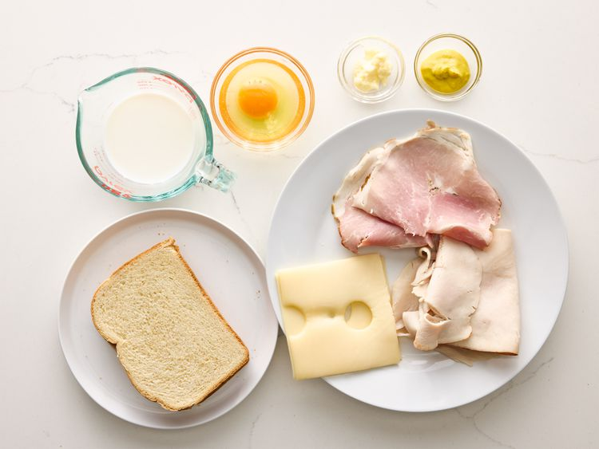
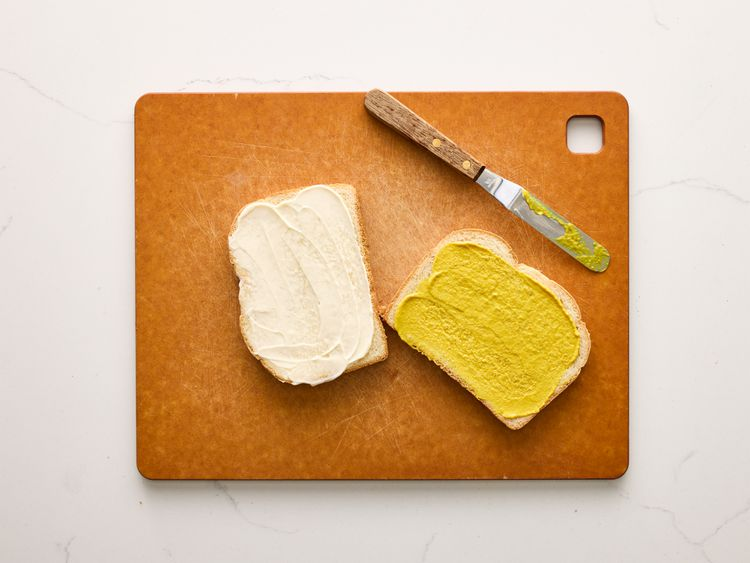
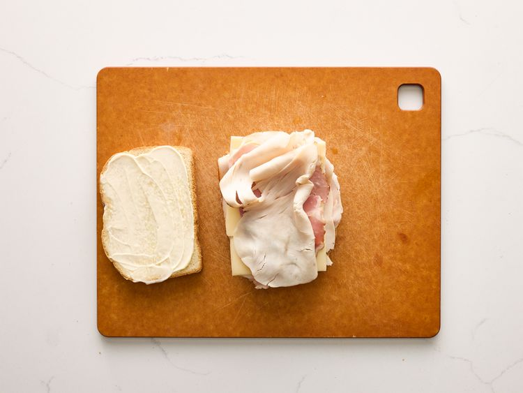
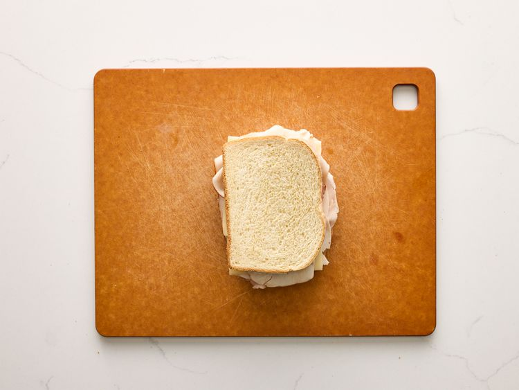
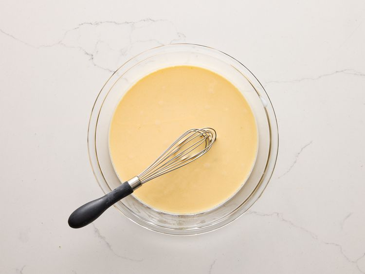
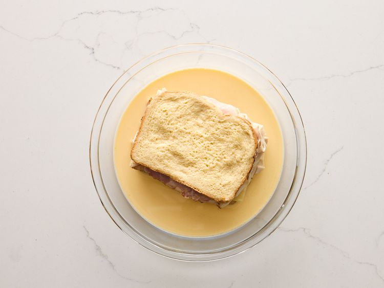
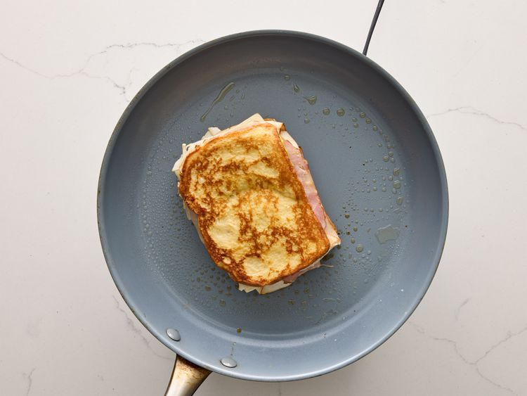
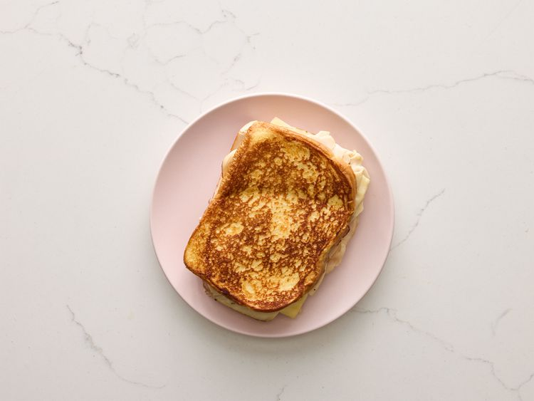

It's a fried sandwich with ham, turkey, Swiss cheese, and mustard dipped in beaten egg and pan-fried until golden and gooey for a delicious alternative to your usual ham and cheese sandwich. Great with berry jam on the side.
Gather all ingredients.

Spread mayonnaise on one side of one bread slice. Spread mustard on one side of remaining bread slice.

Top with alternate slices of ham, turkey, and Swiss cheese.

Close sandwich with remaining bread slice, mayonnaise-side down.

Beat egg and milk in a shallow bowl until well combined. Lightly grease a small skillet over medium heat.

Dip sandwich into egg mixture to coat on both sides.

Transfer sandwich to the hot skillet and cook until golden brown on both sides and cheese is melted.

Serve hot.
